| 日付 | 2020年7月24日（金） |
|---|---|
| メンバー | 家族（妻、長女・9歳、長男・7歳） |
| アクセス | 徒歩 |
4連休、どこかにでかけようかと考えていたが天気が悪くてどこにも行けない。
遠出して雨に降られるのも嫌なので、近場の等々力渓谷に行ってみることにする。
歩いて等々力渓谷に向かえば、往復の歩きと合わせてちょうど良い運動になりそうだ。
等々力渓谷を流れる矢沢川が多摩川と合流する場所にやってくる。
ここからスタート。
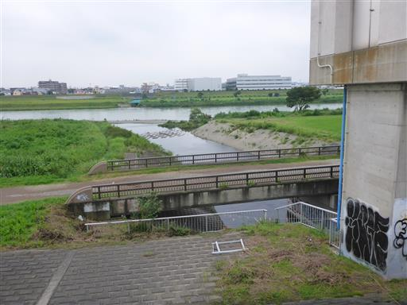
川はしばらくは住宅地の中を流れている。
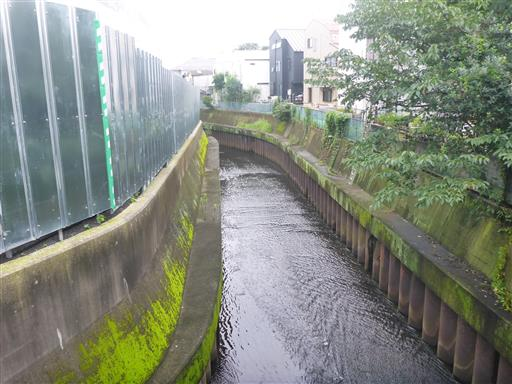
矢沢川の側の水流。矢沢川とは繋がっていないのだろうか？
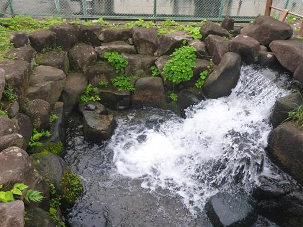
なぜか側に一匹の亀がいる。誰かが放したのだろうか？
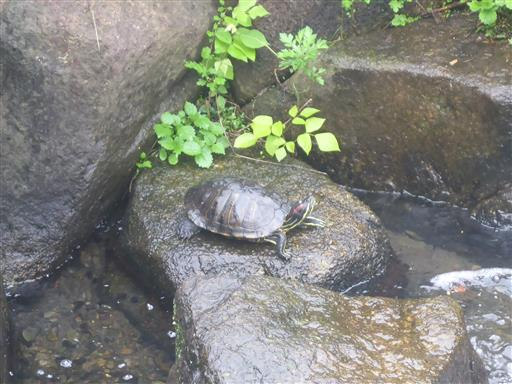
右側が森になる。少し渓谷に近づいてきた。
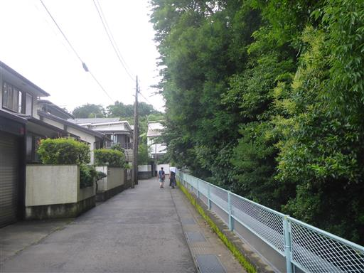
日本庭園の入口。寄って行くことにする。
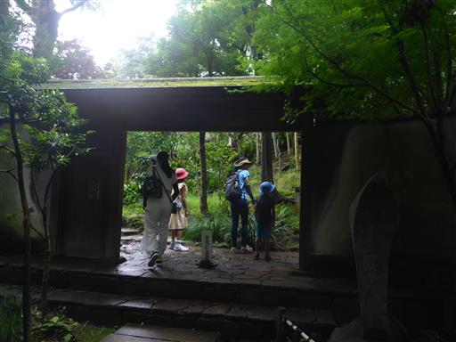
日本庭園の中を歩く。
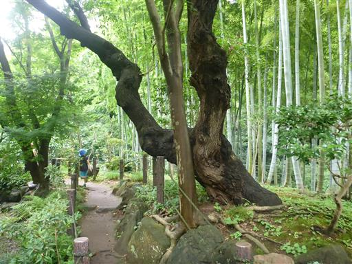
石灯篭。
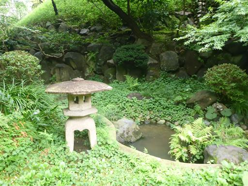
子供達は坂道が楽しくて走って先に行ってしまう。
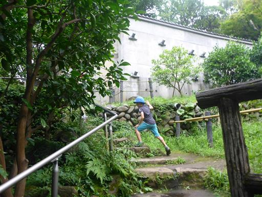
坂を登りきると広場に到着する。
側のベンチに腰掛けて、ここで昼食をとることにする。
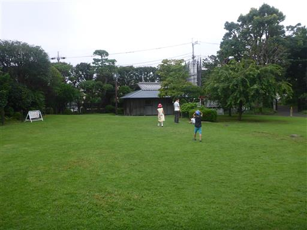
昼食をとったら等々力渓谷を先に進む。
かなり観光地化されているようで人が多い。
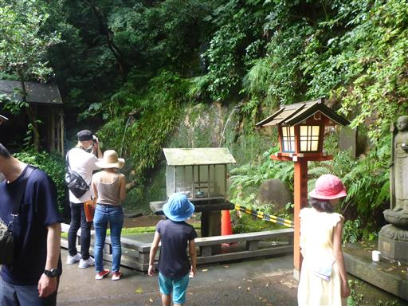
不動の滝。水量が少なく人工物でできており、滝と言うより水道だ。
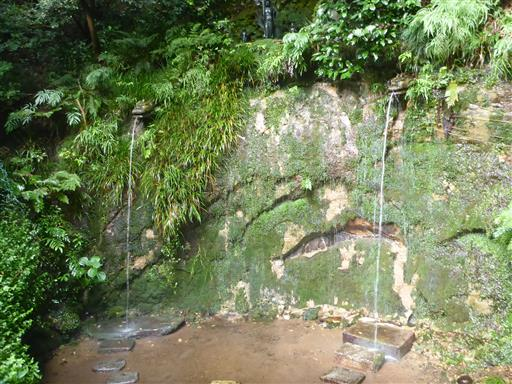
環八の下を潜る。
何度も環八を車で通っているが、この渓谷の存在には気付かなかった。
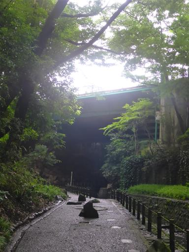
なかなか雰囲気の良い森が広がる。
坂の上には住宅街が広がっているのだが、見えないのでほとんど気にならない。
東京23区内唯一の渓谷だそうだ。
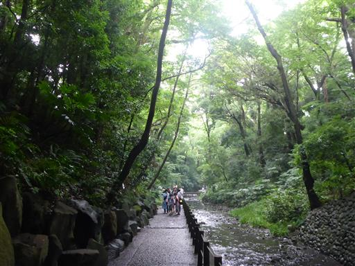
ゴルフ橋に到着。遊歩道はここまで。
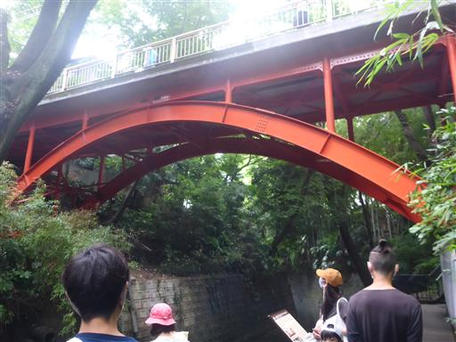
ゴルフ橋の上から等々力渓谷を見下ろす。
都心部を流れてきた川なので、水はあまり美しくない。
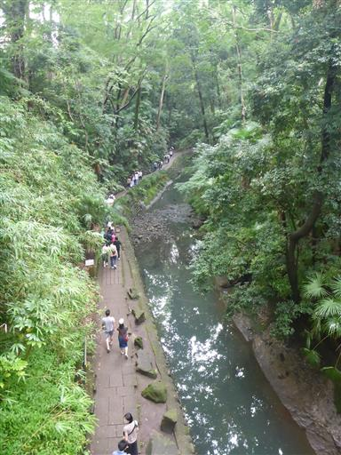
来た道を引き返す。
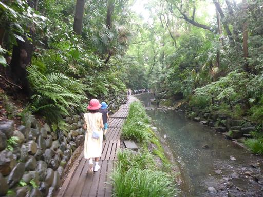
不動の滝の側の甘味処。

ここから等々力渓谷を離れて階段を登る。
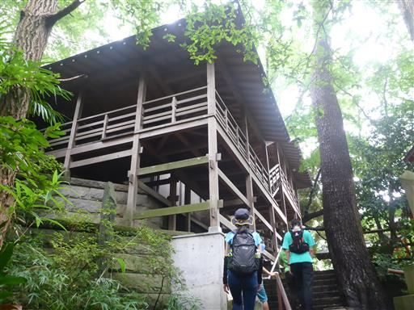
辿り着いたのは等々力不動尊。
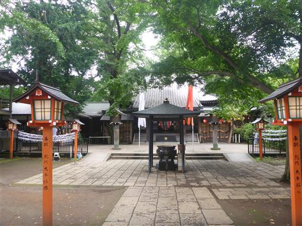
展望台に行ってみる。
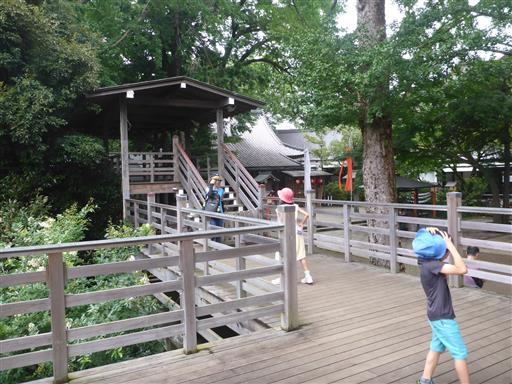
見えるのは木のみで、あまり展望の良くない展望台だ。
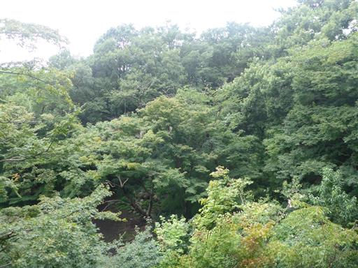
不動尊にお参りする。
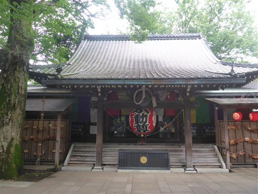
ここからは渓谷沿いとは異なる道を歩いて帰ることにする。
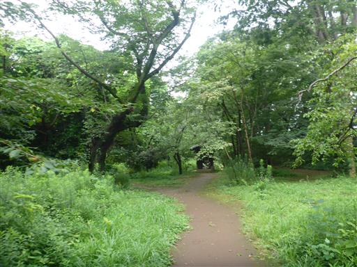
多摩川合流地点まで戻ってくる。
小さな渓谷ではあったが、歩いて行ける範囲にこのような渓谷があることは
新たな発見だった。
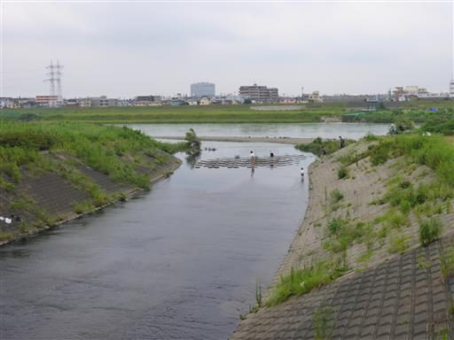